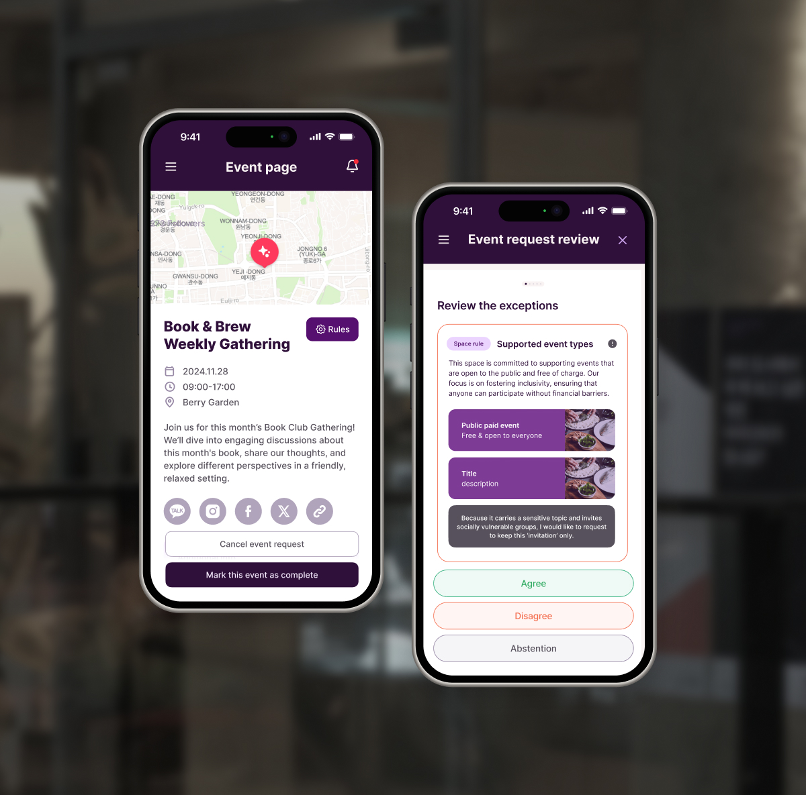

Permissioning the City
UI/UX Design
Oct 2024 - Jan 2025
Freelance: Grafik PLF / Dark Matter Labs
1 Identity Designer & 2 UI/UX Designer

Overview
Permissioning the City is a community-led governance and permissions system which interrogates how we use, manage and share urban space. It takes as a starting point the numerous vacant and underutilised spaces that opened up due to the pandemic and larger demographic and industrial restructuring, with the intention to aggregate and unlock them for civic uses. (explaination from Dark Matter Labs official website)
Background & Goal
This demo was developed under a contract between Dark Matter Labs and Grafik PLF, the design agency commissioned for the project. I participated as a freelance designer within this framework.
From October, we began building a user testing web prototype with core features implemented at a basic level, alongside Figma prototyping. In late November, a user testing workshop was conducted in Daegu, South Korea. After the workshop, the design system was consolidated and documented through January of the following year.
Research & Solution
According to research conducted by Dark Matter Labs prior to the design commission, several pain points were identified in existing space rental platforms.
From the perspective of space providers, users rarely read notices or regulations thoroughly. There is often no direct verification process to confirm whether the space has been properly restored before checkout. When onboarding a space, providers are uncertain about which rules or clauses should be included for safety and accountability.
From the perspective of space users, some regulations appear arbitrary or unclear in purpose during actual use. Rules are unilaterally defined by providers, and platforms typically lack a structured channel for negotiation or adjustment.
The proposed solutions addressed these issues as follows.
First, the platform provides regulation templates categorized by the intended purpose of the space. To discourage users from skipping through regulations, each item requires confirmation through a sliding interaction rather than a simple click, introducing deliberate friction into the reading process.
Second, to complete a booking, users must review the provider cleanup checklist and upload photographic evidence confirming that the space has been restored according to the requirements. Finally, after reviewing the regulations, users can propose modifications to the responsible governance group both before and after using the space. If a proposal is approved, the space usage rules are formally updated within the system.
Design
Parts of this UI were implemented as a functional demo version by the team’s programmers, while the remaining sections were presented through Figma prototyping during the workshop.
As the workshop was conducted in South Korea, the Korean language version was used for testing. The portfolio includes the collaboratively developed English version.